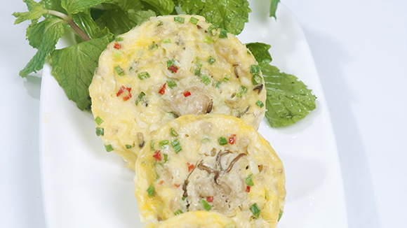

Trứng đà điểu nướng

- Khẩu phần 12
- Chuẩn bị 10 phút
- Thực hiện 30 phút
Nguyên liệu
- 1 quả trứng đà điểu
- 300g thịt heo nạc xay
- 200g nấm mèo
- 1 củ hành tây
- 200g hành lá
- 1/3 thìa cà phê tiêu
- 1 thìa cà phê Hạt nêm từ Thịt Thăn, Xương
Ống và Tủy - Bổ sung Vitamin A
- 1/2 thìa cà phê muối
Hướng dẫn thực hiện
- Trứng đà điểu lấy hết lòng trắng, lòng đỏ ra (để riêng 1 ít lòng đỏ),
dùng đũa đánh tan đều
- Nấm mèo ngâm nước, rửa sạch, thái chỉ. Hành tây thái nhỏ. Hành lá thái
khúc trộn chung với thịt nạc xay và trứng, nêm Hạt nêm từ Thịt Thăn,
Xương Ống và Tủy - Bổ sung Vitamin A, muối, tiêu cho vừa ăn
- Trộn đều các thứ lại với nhau, cho vào xoong lượng vừa đủ, đậy nắp lại,
nướng trên bếp than, cho than lên trên cả nắp xoong. Trứng vừa chín tới,
quét 1 lớp lòng đỏ lên mặt để trứng nướng có màu vàng đẹp, đậy nắp lại thêm
2 phút nữa
- Trứng chín, để nguyên miếng hoặc cắt miếng vừa ăn, xếp vào đĩa, ăn kèm
rau thơm hay dưa leo.